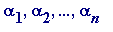
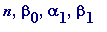

Alan Baker (1939-)
What follows is in no sense complete , in fact it barely scratches the surface.
Alan Baker was awarded a Fields Medal at the 1970 International Congress of Mathematicians held in Nice, France. One day he will surely be awarded the Abel Prize (an annual award, introduced in 2003 by the The Norwegian Academy of Science and Letters to honour Norway's Niels Henrik Abel (1802-1829); J-P. Serre was the first recipient in 2003, and M. Atiyah & I. Singer are the 2004 recipients. See www.abelprisen.no/en/). He is a towering figure who transformed the subject of transcendence, and related areas of Diophantine equations and approximations.
In the final paragraph of his classic book Transcendental and Algebraic Numbers Gelfond wrote: ' Non-trivial lower bounds for linear forms, with integral coefficients, of an arbitrary number of logarithms of algebraic numbers, obtained effectively by methods of the theory of transcendental numbers, will be of extraordinarily great significance in the solution of very difficult problems of modern number theory.Therefore, one may assume, as was already mentioned above, that the most pressing problem in the theory of transcendental numbers is the investigation of the measures of transcendence of finite sets of laogarithms of algebraic numbers.'
From Paul Turán's talk 1970 at the 1970 International Congress of Mathematicians I selectively quote: The theory of transcendental numbers, initiated by Liouville in 1844, has been enriched greatly in recent years. Among the relevant profound contributions are those of A. Baker, W. M. Schmidt, and V. A. Sprindzuk. Their work moves in important directions which contrast with the traditional concentration on the deep problem of finding significant classes of finding functions assuming transcendental values for all non-zero algebraic values of the independent variable. Among these, Baker's have had the heaviest impact on other problems in mathematics. Perhaps the most significant of these impacts has been the application to diophantine equations. This theory, carrying a history of more than a thousand years, was, until the early years of this century, little more than a collection of isolated problems subjected to ingenious ad hoc methods. It was A. Thue who made the breakthrough to general results by proving in 1909 that all diophantine equations of the form f(x, y) = m, where m is an integer and f is an irreducible homogeneous form of degree at least three, with integer coefficients, has at most a finite number of solutions in integers. This theorem was extended by C. L. Siegel and K. F. Roth (himself a Fields medallist) to much more general classes of algebraic diophantine equations in two variables of degree at least three. They even succeeded in establishing upper bounds on the number of such solutions. A complete resolution of such problems however, requiring a knowledge of all solutions, is basically beyond the reach of these methods, which are what are called "ineffective". Here Baker made a brilliant advance . ... [Turán continues to list one development after another, and links to the work of others] As another consequence of his [Baker's] results he gave an effective lower bound for the approximability of algebraic numbers by rationals, the first one which is better than Liouville's.
As mentioned before, these results are all consequences of his main results on transcendental numbers. As is well known, the seventh problem of Hilbert asking whether or not
 is transcendental whenever
is transcendental whenever
 and
and
 are algebraic, certain obvious cases aside, was solved independently by Gelfond and Schneider in 1934. Shortly afterwards Gelfond found a stronger result by obtaining and
explicit
lower bound for
in terms of the alphas and the degrees and heights of the betas when the logarithms are linearly independent (JC comment: over the rationals, and thus over the algebraics).
After Gelfond realised in 1948, in collaboration with Ju. V. Linnik, the significance of an an
effective
lower bound for the three-term sum, and more generally for the n-term sum, he and N. I. Feldman soon discovered an
ineffective
lower bound for it. The transition from this important first step to
effective
lower bound for the three-term sum, and more generally for the n-term sum, resisted all efforts until Baker's success in 1966. This success enabled Baker to obtain a vast generalization of Gelfond-Schneider's theorem by showing that if
are algebraic, certain obvious cases aside, was solved independently by Gelfond and Schneider in 1934. Shortly afterwards Gelfond found a stronger result by obtaining and
explicit
lower bound for
in terms of the alphas and the degrees and heights of the betas when the logarithms are linearly independent (JC comment: over the rationals, and thus over the algebraics).
After Gelfond realised in 1948, in collaboration with Ju. V. Linnik, the significance of an an
effective
lower bound for the three-term sum, and more generally for the n-term sum, he and N. I. Feldman soon discovered an
ineffective
lower bound for it. The transition from this important first step to
effective
lower bound for the three-term sum, and more generally for the n-term sum, resisted all efforts until Baker's success in 1966. This success enabled Baker to obtain a vast generalization of Gelfond-Schneider's theorem by showing that if
 (none 0 or 1) are algebraic,
(none 0 or 1) are algebraic,
 are
algebraic with
are
algebraic with
 linearly independent over the rationals, then
linearly independent over the rationals, then
![alpha[1]^beta[1]*alpha[2]^beta[2]*`...`*alpha[n]^be...](images/transcendental926.gif) is transcendental. Some further appreciation of the
depth
of this result can be gained by recalling Hilbert's prediction that the Riemann hypothesis conjecture would be settled long before the transcendentality of
is transcendental. Some further appreciation of the
depth
of this result can be gained by recalling Hilbert's prediction that the Riemann hypothesis conjecture would be settled long before the transcendentality of
 .
The analytic prowess displayed by Baker could hardly receive a higher testimonial... Among his other results generalizing transcendentality results of Siegel and Schneider I mention only one special case,
in itself sufficiently remarkable
, according to which the sum of circumferences of two ellipses, whose axes have algebraic lengths, is transcendental...
.
The analytic prowess displayed by Baker could hardly receive a higher testimonial... Among his other results generalizing transcendentality results of Siegel and Schneider I mention only one special case,
in itself sufficiently remarkable
, according to which the sum of circumferences of two ellipses, whose axes have algebraic lengths, is transcendental...
__________________
In the early 1960s, before Baker's stunning series of linear forms in the logarithms of algebraic numbers papers began to appear, Baker (while a PhD student at Cambridge) proved many remarkable results, of which I choose just one, and its consequence:
Baker's Theorem (1964). For all rational numbers
(
) we have
>
Baker's immediate consequence. Let N be any non-zero integer, then all solutions in integers x , y of the equation
... (3)
satisfy max(| x |, | y |) < .
Appreciation. To feel the value of that result one should recall Thue's theorem would inform only that there are at most a
finite
number of integers
x
,
y
satisfying (3). Also one should remind oneself of the fact that in the quadratic case of (3) (i.e.
... (2)) matters are quite different: for any integer
N
the equation (2) either had
no
solutions (e.g., there are no integers x, y such that
; that's a simple exercise) or
infinitely many
solutions (e.g.,
 has infinitely many solutions).
has infinitely many solutions).
Now, a question related to the Gelfond-Schneider theorem.
Theorem (Baker, 1966). If
 are non-zero algebraic numbers such that
[no matter what values are chosen of the logarithms are chosen in the complex case] are linearly independent over the rationals, then
are non-zero algebraic numbers such that
[no matter what values are chosen of the logarithms are chosen in the complex case] are linearly independent over the rationals, then
 are linearly independent over the field of all algebraic numbers.
are linearly independent over the field of all algebraic numbers.
Consequences .
Theorem (Baker, 1966). Any non-vanishing linear combination of logarithms of algebraic numbers with algebraic coefficients is transcendental.
In other words, if
 are non-zero algebraic numbers, and
are non-zero algebraic numbers, and
 are algebraic numbers such that
, then
is necessarily transcendental.
are algebraic numbers such that
, then
is necessarily transcendental.
The first major point to note is that this theorem completely answers the particular question - and the completely general case of that question - that Siegel posed at the end of Chapter 3 of his book, and which I've already written about in the Siegel section.
Notice, by the way, that the transcendence of
 is a
minor
consequence: simply choose
, and use the fact that
is a
minor
consequence: simply choose
, and use the fact that
 is
a
value of the
complex
logarithm
(that's just the old classic
, that was utilized by Lindemann in his proof of the transcendence of
is
a
value of the
complex
logarithm
(that's just the old classic
, that was utilized by Lindemann in his proof of the transcendence of
 ). Then
). Then
 cannot be algebraic since otherwise
would also be algebraic, contrary to Baker's theorem.
cannot be algebraic since otherwise
would also be algebraic, contrary to Baker's theorem.
Theorem (Baker, 1966). is transcendental for any non-zero algebraic numbers
 , .
Examples. Simply make up your own!! Notice, in passing, that the transcendence of e is a minor consequence: simply choose  all to be 1.
Theorem (Baker, 1966).
is transcendental for any algebraic numbers
 , other than 0 or 1, and any algebraic numbers
with
linearly independent over the rationals.
, other than 0 or 1, and any algebraic numbers
with
linearly independent over the rationals.
Obvious comment on the
'linearly independent'
condition. Recall the Gelfond-Schneider theorem tells us that
is transcendental where
 are any algebraic numbers with
, and
is irrational. Now consider two such numbers -
are any algebraic numbers with
, and
is irrational. Now consider two such numbers -
![alpha[1]^beta[1]](images/transcendental964.gif) and
and
![alpha[2]^beta[2]](images/transcendental965.gif) - and consider their product and sum. What can be said about those numbers? (Bear in mind it is
completely elementary
that if
are two transcendental numbers then
at least one
of
- and consider their product and sum. What can be said about those numbers? (Bear in mind it is
completely elementary
that if
are two transcendental numbers then
at least one
of
 and
must be transcendental; recall the remark concerning
and
must be transcendental; recall the remark concerning
 and
at the end of the Siegel section). In reality, nothing of any value can be said about their sum, and I won't dwell on it, but something profound can be said about their product. Essentially what I am going to say is that the product is transcendental, but one needs to rule out of consideration one obvious case, which I hope is made clear by these two cases:
and
at the end of the Siegel section). In reality, nothing of any value can be said about their sum, and I won't dwell on it, but something profound can be said about their product. Essentially what I am going to say is that the product is transcendental, but one needs to rule out of consideration one obvious case, which I hope is made clear by these two cases:
-
Choose
to be
, then
![alpha[1]^beta[1]](images/transcendental973.gif) and
and
![alpha[2]^beta[2]](images/transcendental974.gif) are
are
 and
and
 ,
,
and their product .
is clearly 1, is most certainly not transcendental!
.
is clearly 1, is most certainly not transcendental!
Of course you see how I made that happen: I choose the 5 and 25 in the obvious way, and the two irrational powers are linearly dependent over the rationals in such a way as to make... -
Here I make a choice that is like the previous one, but with one small change: choose
![alpha[1], beta[1], alpha[2], beta[2]](images/transcendental980.gif) to be
, then
to be
, then
![alpha[1]^beta[1]](images/transcendental982.gif) and
are
and
and
are
and
 and their product
and their product
 .
is clearly
, is clearly algebraic.
.
is clearly
, is clearly algebraic.
Of course you again see how I made that happen: this time the irrational powers are
linearly
are
linearly
in dependent over the rationals, but the three numbers 1 , are linearly dependent over the rationals.
To end, I quote directly from two papers of Alan Baker (the celebrated 1968 pair, published back-to-back in the same issue of the Philosophical Transactions of the Royal Society of London):
CONTRIBUTIONS TO THE THEORY OF DIOPHANTINE EQUATIONS
1. ON THE REPRESENTATION OF INTEGERS BY BINARY FORMS
By A. BAKER
1. Introduction
It was proved by Thue (1909) that the Diophantine equation
f ( x , y ) = m , (1)
where f denotes an irreducible binary form with integer coefficients and degree at least 3, and m is any integer, possesses only a finite number of solutions in integers x , y . Thue discovered the theorem by way of his fundamental studies on rational approximations to algebraic numbers, which were later profoundly developed in the celebrated works of Siegel (1921) and Roth (1955), and which formed the genesis of many other investigations. But Thue's theorem, like all subsequent developments, suffers from one basic limitation, that of its non-effectiveness... Indeed it would seem that even for cubic polynomials f , no generally effective algorithm for the complete solution of (1) has hitherto been established, although a wide variety of techniques have been successfully employed to treat particular equations of this kind.
The present paper is devoted to a new proof of Thue's theorem, which proceeds by an argument that is effective, and therefore provides an algorithm for the complete solution of (1) in integers x , y . Let f ( x , y ) denote a homogeneous polynomial in x , y with degree n (at least 3) and with integer coefficients, irreducible over the rationals. Suppose that
 >
n
+ 1 (2)
>
n
+ 1 (2)
and let m be any positive integer. The main result of this paper is as follows
Theorem 1. All solutions of (1) in integers x, y satisfy
max(| x |, | y |) <
where
C
is an effectively computabe constant depending only on
n
,
 , and the coefficients of
f
.
, and the coefficients of
f
.
... ... ...
Theorem 2.
Suppose
 is an algebraic number with degree n (at least 3), and that
is an algebraic number with degree n (at least 3), and that
 >
n
+ 1.
Then there is an
effectively computable number
c
=
> 0
such that
>
n
+ 1.
Then there is an
effectively computable number
c
=
> 0
such that
 >
(3)
>
(3)
for all integers p , q ( q > 0) .
And later:
CONTRIBUTIONS TO THE THEORY OF DIOPHANTINE EQUATIONS
II. THE DIOPHANTINE EQUATION

By A. BAKER
1. Introduction
The problem of finding the totality of integers whose cubes differ by a given integer from a square has interested mathematicians for several centuries. According to Dickson's History of the theory of numbers researches on the subject can be traced back at least as far as Bachet (1621), and numerous contributions to the general theory can be found in the works of Fermat, Euler, V. A. Lebesgue, Pepin, Jonquières and many others. More especially, during the past fifty or so years, the equation of the title has been extensively investigated by Mordell (1913, 1914, 1922, 1923, 1963, 1964 and see, in particular, 1947: A chapter in the theory of numbers ), Nagell (1929, 1930), Delaunay (1929) (Footnote: See also Delone [Delaunay] & Faddeev (1940)), Ljunggren (1942, 1963) and Hemer (1952, 1954) (Footnote: See also Skolem (1938), Marshall Hall (1953)), and a complete set of solutions has now been obtained for large classes of values of k ; these include, for example, all k satisfying 0 < , except for 20 special cases. The methods of solution vary widely according to the specific k under discussion, but they usually involve a combination of congruence techniques, together with a detailed study of the arithmetic of certain underlying number fields. In addition the argument often utilizes the well known connection between the equation of the title and equations of the kind
f ( x , y ) = m , (1)
where
f
denotes an irreducible binary form with integer coefficients and degree at least 3, and
m
denotes a fixed integer. In particular Mordell (1922, 1923) (Footnote: See also Thue (1917), Landau & Ostrowski (1920), Siegel (1926)) has employed this feature, together with the famous theorem of Thue (1909), to show that, for any
 , the equation
, the equation
 (2)
(2)
has only a finite number of solutions in integers x , y . No general algorithm, however, has hitherto been established which would enable one to find all solutions of (2) for any prescribed k .
In a recent paper (Baker 1968 [JC: the first paper above]) a new proof of the finiteness of the number of solutions of (1) was given, which, in contrast to Thue's original proof, proceeds by an argument that is effective and provides therefore a process for determining all solutions of the equation in integers x , y . Moreover, it was remarked that, in consequence of this result, one could now obtain an effective algorithm for the complete solution of (2) in integers x , y , and it is the purpose of the present paper to supply the details of the demonstration. The precise result that will be established is as follows.
Theorem 1. For any integer
 , and integers
x
,
y
with
, we have max(|
x
|, |
y
|) <
.
, and integers
x
,
y
with
, we have max(|
x
|, |
y
|) <
.
___________
I could report on later developments, but I need to end somewhere, and here is as good a place as any.